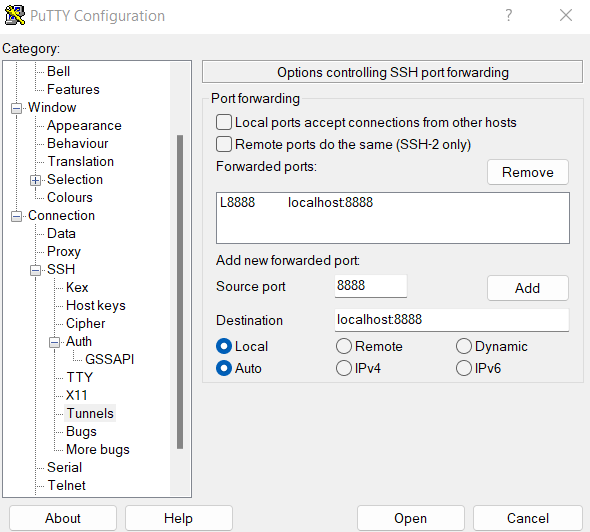
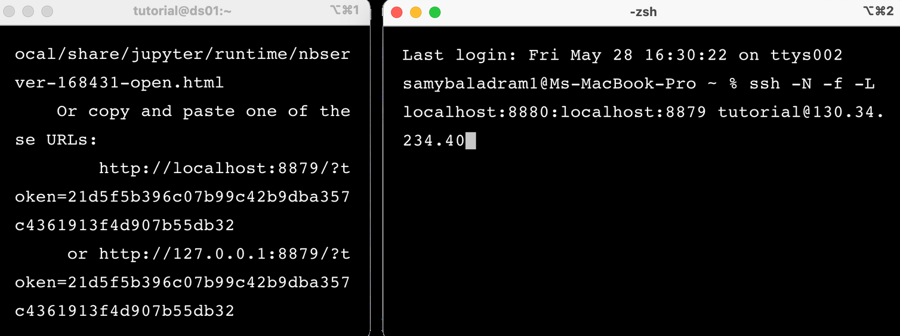
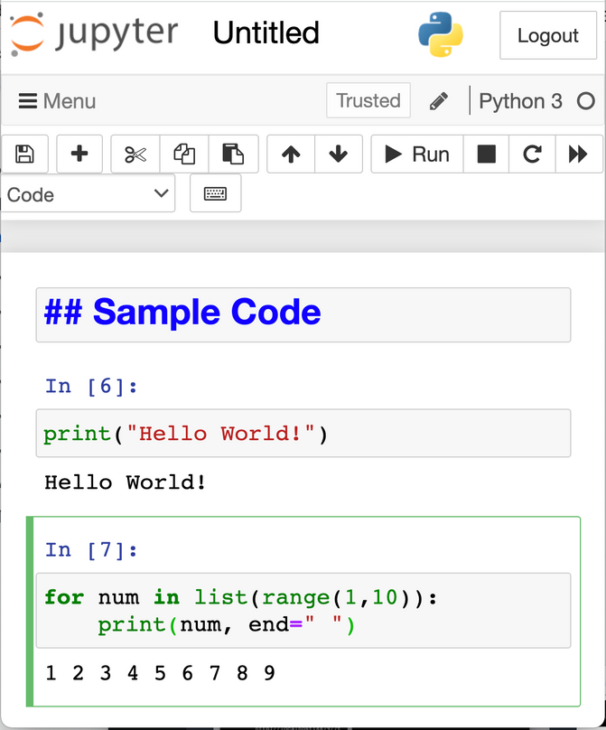

Log-in to the remote machine and activate your virtual environment.
Then, start Jupyter Notebook to obtain the notebook link.
Expected output
Practice 2: Forward the remote server port to your local port#
Go to SSH on the bottom of the left pane to expand the menu and then click on Tunnels.
Enter the port number (8888 in the example, try 8889, 8890, etc. if it gives error) which you want to use to access Jupyter on your local machine in Source port. Set the destination as localhost:8888 where :8888 is the number of the port that Jupyter Notebook is running on. Then click the Add button, and the ports should appear in the Forwarded ports list.

Save your configuration for later use (see Lesson 1.4).
Open another Command Prompt (Shell > New Window). In order to run Jupyter Notebook from your browser, forward this to port 8888 of your machine. (Try 8889, 8890, etc. if it gives error)
Expected output

Practice 3: Opening Jupyter Notebook on Your Browser#
Open any browser (Google Chrome, etc.) and copy-paste the Jupyter Notebook URL from the old terminal. Change the host port number from the new terminal.
In Jupyter Notebook, the file is saved with extension .ipynb. For many purposes, sometimes
the raw python file .py is necessary, especially when using the cluster machine.
We will try to make a simple program in both .ipynb and .py.
Make a new Python 3 file in the folder /yourfolder/scripts/python/. Then, make a simple header, print “Hello World”, and use a for loop to print numbers 1-10.
Expected output

Practice 5: Saving Jupyter Notebook as Python file#
Open the Menu in the upper left corner, save the previous Notebook as yourname_test and download that file as .py. Then, drag & drop the file from your PC to Jupyter page.